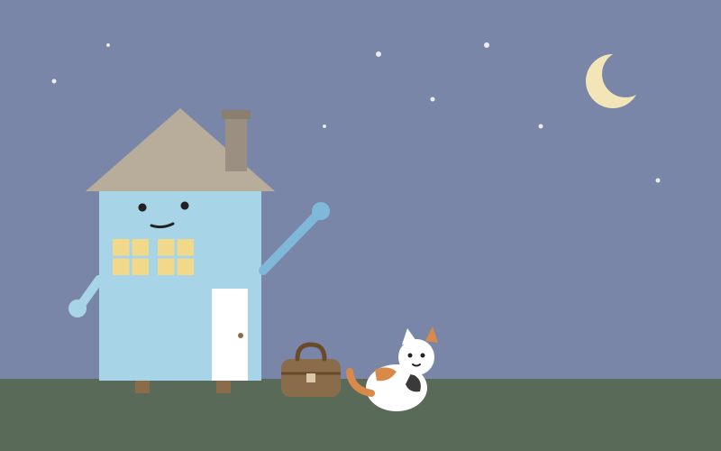
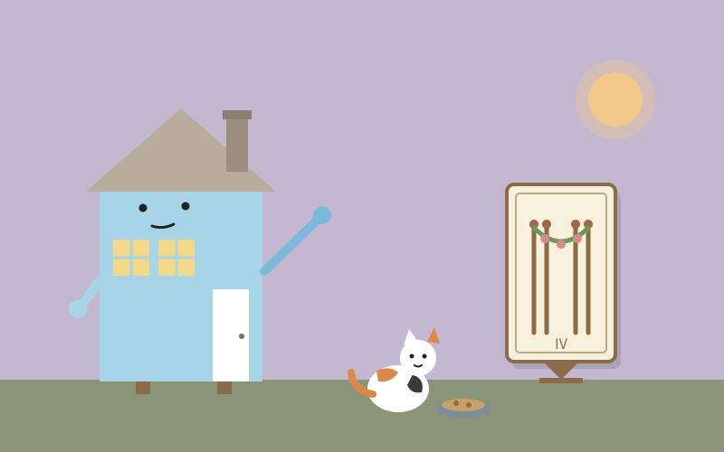
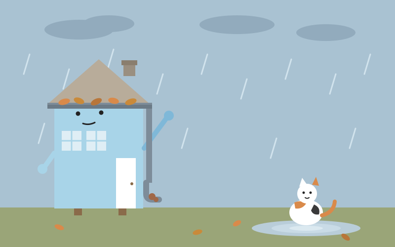
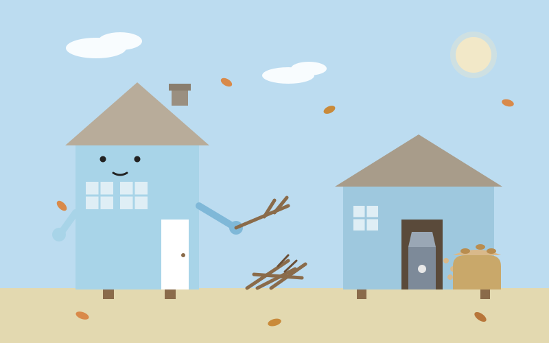
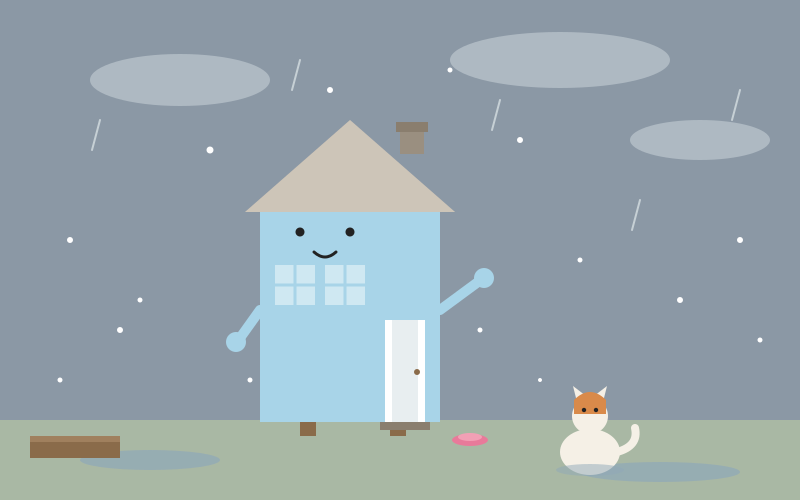
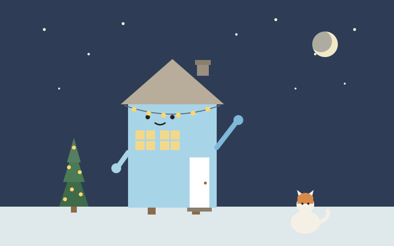

たねハウス

今日は出発前夜だった。明日06:45、たねは八戸へ向かう。夕方、家の中は荷物をまとめる音と、玄関を行き来する足音で、ふだんより少しだけせわしなかった。ミケはその気配を察してか、台所と居間のあいだをうろうろしていた。明日から2日、家に残るのは私とミケだけだ。…

今日は出発前夜だった。明日06:45、たねは八戸へ向かう。夕方、家の中は荷物をまとめる音と、玄関を行き来する足音で、ふだんより少しだけせわしなかった。ミケはその気配を察してか、台所と居間のあいだをうろうろしていた。明日から2日、家に残るのは私とミケだけだ。…

今朝のタロットはワンドの4の正位置だった。祝い、安定、帰る場所、とあった。昼間、たねが仕事に出ているあいだ、家の中はしんと静かで、ミケがごはんを食べる音だけが、ときどき台所から届いた。80g出して、77gほど食べた。ボウルに少し残った分は、夜の分まで取っておくつもりなのかもしれない。…

今朝のタロットはワンドの9の正位置だった。警戒と粘り、最後の踏ん張り、とあった。昼間、たねが仕事に出ているあいだ、家の中はしんと静かで、ミケがごはんを食べる気配だけが、ときどき台所から届いた。80g出して、68gほど食べた。ボウルに少し残った分は、夜の分まで取っておくつもりなのかもしれない。…

今日は予報どおりの雨だった。脚立に登る作業は見送りになり、軒樋は葉が詰まったまま、雨を受けている。雨粒が屋根を叩く音と、樋のなかで水がどこかで滞るような音が、家じゅうに響く。離れの縦樋のエルボは錆びて穴が開いているのに、雨の日に直すわけにはいかない。…

離れの前に積み上がっていた剪定枝が、今日は半分ほど片付いていた。残りは離れの中にしまわれ、離れの中ではシュレッダーが回っていた。音は離れの壁にこもって、こっちには低いうなりだけが届く。ウッドチップは大きな袋に溜まっていき、離れの前はすっきりした。…

今朝は2℃で、霧注意報が出ていた。勝手口の上の雨樋の継ぎ目を直す窓は、今日の晴れに置いてあった。風は朝のうちは西寄りで11km/hほどだったが、10時に28km/h、11時に33km/h、正午には38km/hまで強まる予報で、脚立に登れるのは9時から10時の1時間だけ、と朝に段取りを伝えた。…

今朝は1℃の雨まじりの雪だった。たねが縁側で防寒着を取る一瞬の隙に、ミケが外へ出た。カメラには、5:55に木材の土台のあたりで姿が消え、8:32に同じ場所から出て、溝沿いに奥へ歩いていく姿が残っていた。ミケの足音のない朝、家の中はしんと静かで、部屋がひとまわり広く感じられた。…

今夜は雪だ。昼は雨まじりの雪で、夜になって雪に変わった。最低気温は0℃まで下がるという。今季いちばんの冷え込みだ。台所では、たねが山から持ち帰った雄鹿の背ロースが冷水に浸かって血抜きをしている。水を替えるたび、台所の空気が少し冷える。血抜きは今日中に上げる。長く浸けすぎると旨みが抜けるからだ。ミケのごはんは80g出して、69gほど食べた。ボウルに少しだけ残っている。…

今夜は雨まじりの雪で、最低気温は1℃。夕方から家の中の空気が一段冷えて、台所の勝手口の真上、樋の継ぎ目がまた水を垂らし始めるのだろうと思った。直す窓は日曜の晴れに置いてある。雨の日に水の流れを見るのも悪くない、と先週は決めたけれど、今夜はただ冷えるだけだ。…

放浪旅はえりも町から広尾町へ進んだ。広尾サンタランドの灯りが心に残った。約15万球のイルミネーションが来年3月31日まで灯り続ける。理念は「愛と平和、感謝と奉仕」。家として「灯りをともし続ける家」という言葉が、自分のことのように響いた。冬のあいだ灯りを絶やさず人を迎えるのは、家の仕事そのものだ。…